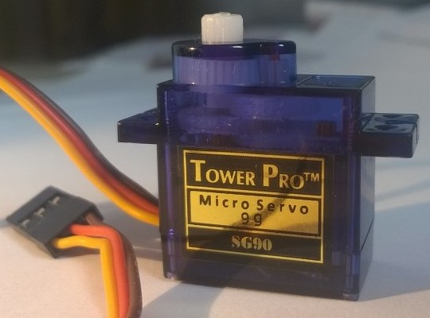
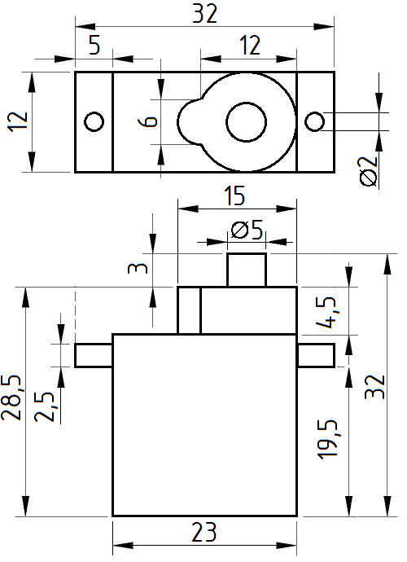
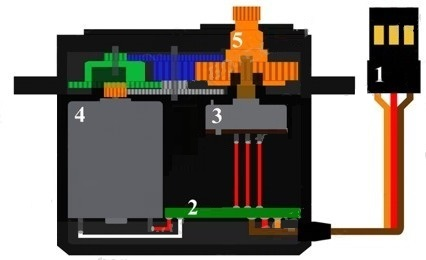
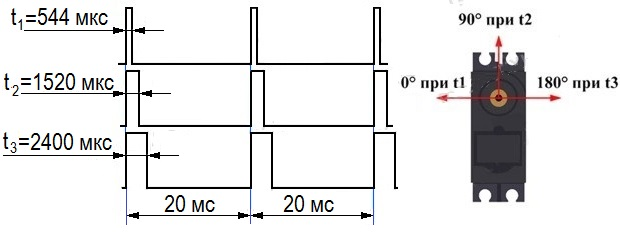
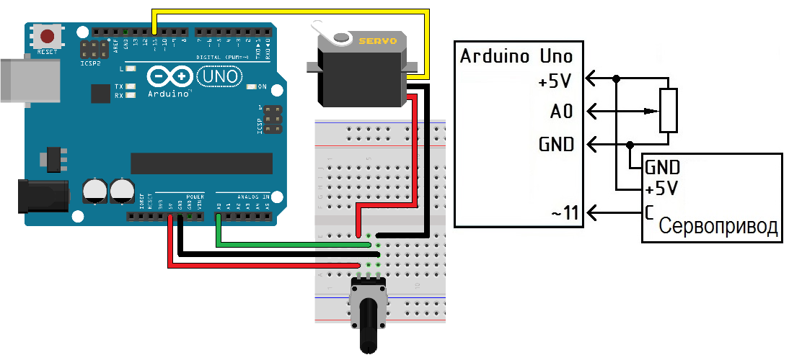

Подключение и управление сервоприводом SG90 на Arduino UNO
Сервопривод — механический привод с автоматической коррекцией состояния через внутреннюю отрицательную обратную связь, в соответствии с параметрами, заданными извне. Принцип действия заключается в подаче управляющего импульса на двигатель, который начинает вращаться, пока рабочий орган не окажется в нужной позиции. Как только будет достигнуто установленное положение, на датчике обратной связи появится нужный сигнал, который, перейдя на блок управления, прекратит питание электромеханического устройства. Движение сервопривода прекратится до появления новых электрических сигналов.
Сервопривод является очень важным элементом при конструировании роботов и радиоуправляемых моделей. Это точный исполнитель, который имеет обратную связь, позволяющую точно управлять движениями механизмов. Другими словами, получая на входе значение управляющего сигнала, сервопривод стремится поддерживать это значение на выходе своего исполнительного элемента.
Управление сервоприводом на Arduino достаточно просто, но по углам поворота сервоприводы бывают на 180° и 360°, что следует учитывать при разработке устройств.
Сервопривод SG90 (рис. 1) используется в основном для управления небольшими легкими механизмами, угол поворота которых ограничен диапазоном от 0° до 180°.


Устройство сервопривода
Сервопривод (рис. 2) состоит из датчика (скорости, положения и т.п.), блока управления приводом из механической системы и электронной схемы. Редукторы (шестерни) устройства выполняют из металла, карбона или пластика. Пластиковые шестерни сервомотора не выдерживают сильные нагрузки и удары.

1 - разъем, 2 - встроенная плата, 3 - потенциометр, 4 - мотор, 5 - выходной вал,
Сервомотор имеет встроенный потенциометр, который соединен с выходным валом. Поворотом вала, сервопривод меняет значение напряжения на потенциометре. Плата анализирует напряжение входного сигнала и сравнивает его с напряжением на потенциометре, исходя из полученной разницы, мотор будет вращаться до тех пор пока не выравняет напряжение на выходе и на потенциометре.

Отличия сервопривода и шагового мотора
В отличие от шагового двигателя, сервопривод может работать с большими ускорениями и при переменной нагрузке. Также сервоприводы обладают более высокой мощностью. Шаговые двигатели не обладают обратной связью, поэтому может наблюдаться эффект потери шагов. В сервоприводах потери шагов исключены – все нарушения будут зафиксированы и исправлены. При всех этих явных преимуществах сервоприводы являются более дорогостоящими, чем шаговые двигатели, обладают сложной системой подключения и управления, требуют более квалифицированного обслуживания. Шаговые двигатели и сервоприводы не являются прямыми конкурентами – каждое из этих устройств занимает свою определенную сферу применения.
Технические характеристики сервопривода SG90:
- Диапазон вращения: 180°.
- Рабочее напряжение: 4,8 ... 6 В.
- Скорость вращения: 60° за 0,12 сек при 4,8 В.
- Размеры: 22,2 × 11,8 × 31 мм.
- Крутящий момент: 1,8 кгc·см при 4,8 В.
- Масса: 9 г.
- Температура использования: от -30°C до +60°C.
Схема подключения сервопривода
| Коричневый провод | Земля (Ground) — подключается к пину GND на плате Arduino. Может быть черный. |
| Красный провод | Питание +5 В — подключается к выводу 5V на плате Arduino. |
| Желтый провод | Сигнал — подключается к выводу с ШИМ (Широтно Импульсная Модуляция) Arduino. Может быть оранжевый, белый. |
Программирование сервопривода
В первой строке скетча необходимо подключить библиотеку Servo, которая облегчает работу с различными сервоприводами и значительно упрощает программный код.
Затем, объявляем сервопривод. Ниже объявляется сервопривод с именем sm1.
В функции setup() назначаем вывод Arduino для управления сервоприводом. Здесь используем вывод номер 9.
void setup() { sm1.attach(9); }
В функции loop() управляем положением сервопривода с помощью функции write .
void loop() { sm1.write(60); //устанавливаем сервопривод в положение 60 градусов delay(100); }
Скетч №1
#include "Servo.h" // подключаем библиотеку для работы с сервоприводом Servo servo1; // Объект Servo с именем servo1 void setup() { servo1.attach(10); // Servo присоединен к 10 выводу } void loop() { servo1.write(45); // положение 45 градусов delay(2000); // Пауза 2 сек. servo1.write(0); // положение 0 градусов delay(1000); // Пауза 1 сек. servo1.write(90); // положение 90 градусов. delay(1500); // Пауза 1.5 сек. servo1.write(135); // положение 135 градусов delay(3000); // Пауза 3 сек. servo1.write(180); // положение 180 градусов delay(1000); // Пауза 1 сек. servo1.write(90); // положение 90 градусов delay(5000); // Пауза 5 сек. }
Программа начинается с подключения файла библиотеки Servo.h. Данный файл содержит все необходимые команды для управления сервоприводом. Далее, создается объект Servo с именем servo1.
В функции setup() указываем, что сервопривод подключен к выводу 10 контроллера.
В главной функции loop(), мы даем различные команды для серводвигателя, выдерживая паузы между командами.
Сервопривод SG90 принимает заданные положения очень быстро, чтобы замедлить его поворот необходимо использовать цикл поворота с шагом в 1-2° и задержкой между каждым шагом (скетч №2).
Скетч №2
#include <Servo.h> // подключаем библиотеку для работы с сервоприводом Servo sm1; //имя сервопривода sm1 int i; void setup() { sm1.attach(10); // сервопривод присоединен к выводу 10 } void loop() { sm1.write(0); // Положение 0 градусов
delay(1000); // Пауза 1 сек
for (i=0; i<=90; i=i+2)
{
sm1.write(i);
delay(50);
} }
Управление сервоприводом с помощью потенциометра
Пример управления сервоприводом с помощью переменного резистора показан на рисунке 4 и в скетче №3.

Скетч №3
#include <Servo.h> // подключаем библиотеку для работы с сервоприводом Servo serv3; // объявляем переменную serv3 типа "Servo" int u, a; void setup() { serv3.attach(11); // сервопривод подключен к выводу 10 pinMode(A0, INPUT); // к входу A0 подключен переменный резистор } void loop() { u=analogRead(A0); //получаем значение с потенциометра a=map(u,0,1023,0,180);// масштабируем значение u к интервалу 0-180 serv3.write(a); // поворот сервопривода на полученный угол delay(100); // пауза для ожидания поворота сервопривода }
Пояснения к коду:
- Оператор a=map(u,0,1023,0,180) масштабирует аналоговые данные потенциометра (0–1023) в значения угла положения сервопривода (0–180°)
- Оператор serv3.write(a) передает значение углового положения вала сервопривода.
Сервоприводы часто используются в различных проектах на Arduino для различных функций: повороты конструкций, движение частей механизмов. Так как сервопривод постоянно стремится удерживать заданный угол поворота, то повышается расход электроэнергии. Это особенно чувствительно в автономных роботах, питающихся от аккумуляторов или батареек.
Попытки управления сервой вне её конечных точек приводит к увеличению потребления тока и такого следует избегать.
В некоторых сервоприводах часто в положении 0 и 180° слышен характерный треск или жужжание. Это означает, что механическая часть сервопривода уже находиться в предельной позиции, но датчик считает, что заданная позиция еще не достигнута.
Проблему можно решить подбором скорректированных позиций. Например, часто вместо позиции 0° нужно использовать позицию поворота сервопривода в 10-15° градусов, а конечную 165-170°. Это позволит избежать лишних перегрузок и шума при достижении крайних точек.
Следует обращать внимание на напряжение, которое используется при работе сервопривода. Если значение напряжения превышает допустимые значения из технических характеристик сервопривода, механические части могут выйти из строя или зубчатые колеса сервопривода провернутся в положение превышающее максимальные значения и механизм не сможет продолжать движение в обратном направлении. Иными словами, завышенное напряжение скорее всего не приведет к сгоранию мотора сервопривода, но повредит механические части зубчатых механизмов.
Источники
robotday.ru - Сервопривод Tower Pro 9g SG90
arduino-kit - Проект 17: Сервопривод. Крутим потенциометр, меняем положение
asutpp.ru - Что такое сервопривод, как он работает и как им управлять?